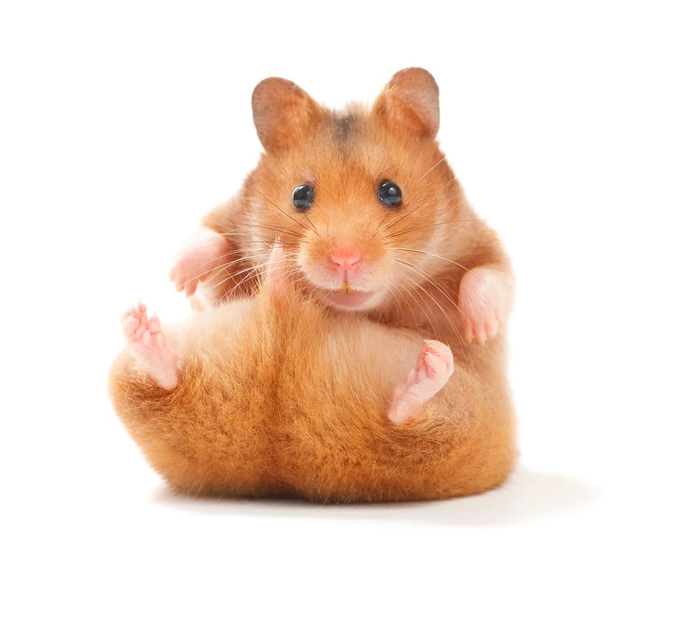
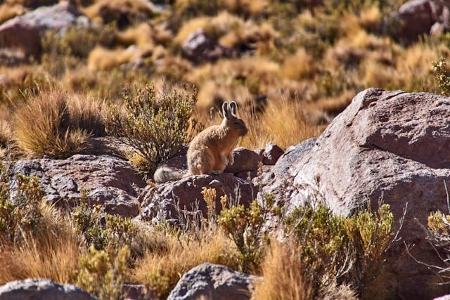
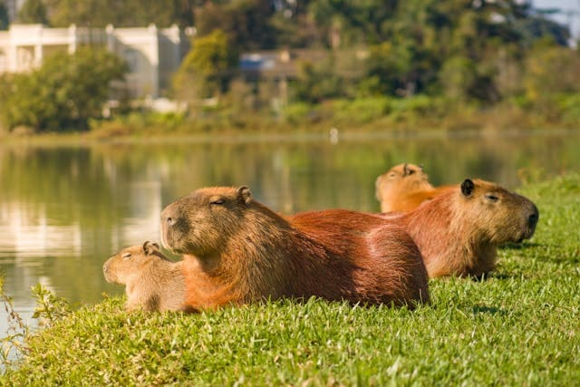
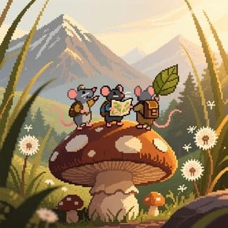

¿Qué son los roedores?
Se trata de un grupo de pequeños mamíferos con dientes frontales en continuo crecimiento para morder o roer. Aproximadamente, se cuenta con 2280 especies actuales, siendo es el orden más numeroso de mamíferos.
Estos pequeños peluditos hacen sus casas debajo de la tierra, lo que se llama madriguera. En ese lugar duermen, guardan su comida y se cobijan de depredadores.
¿Quieres saber más acerca de estos animalitos? ¡Echa un vistazo por aquí! 👀👇
Especies y curiosidades

Musaraña
- Es el roedor más pequeño, midiendo 4cm de largo sin contar la cola.
- Su nombre significa "ratÓn araña", por la creencia antigua de que eran venenosas como las arañas.
- Animales solitarios y muy activos, tanto de dÍa como de noche.
- Viven de 1 a 2 años y se alimenta principalmente de insectos.

Hámster
- Almacenan comida en sus mejillas.
- Son nocturnos, solitarios y muy activos por la noche.
- Su tamaño varí dependiendo de la raza: Sirio es el más grande.
- Pueden correr hasta 8 km en una noche, aunque tienen una visión limitada y un oído muy agudo.
- Sus dientes no paran de crecer nunca.
- Son animales muy limpios, se acicalan constantemente.

Cobaya
- No pueden sintetizar vitamina C.
- Son más grandes que los hámsters.
- Se comunican mediante sonidos como chirridos y silbidos.
- Son animales sociales y tienen mejor visión que los hámsters.

Vizcacha
- Apariencia de un conejo cansado debido a su expresión facial, lo que las hace muy graciosas.
- Animales sociales, viven en grandes colonias.
- Emiten sonidos para comunicarse.
- Es un roedor grande, similar a una liebre.
- Vive en colonias en zonas montañosas.
- Es símbolo de la fauna andina.

Capibara
- Es el roedor más grande del mundo.
- Son herbívoros.
- Es excelente nadador y pasa mucho tiempo en el agua.
- Es social y vive en grupos grandes, además son pacíficos y conviven bien con la mayoría de especies.
Cuidados a tener en cuenta
| Especie | Jaula | Sustrato | Acondicionamiento | Limpieza | Alimentación | Ejercicio y socialización | Vida en naturaleza y en libertad |
|---|---|---|---|---|---|---|---|
| Capibara | ❌ | ❌ | ❌ | ❌ | Dieta basada principalmente en pastos y plantas acuáticas. También comen frutas, verduras y corteza de árboles | Animales muy sociables que ejercitan socializando en grupo, lo que les permite pastar, nadar y descansar juntos. Pasn gran parte de su tiempo en el agua, son grandes nadadores. | ✅ Pocos países permiten tenerlos de mascotas y en condiciones muy estrictas. |
| Vizcacha | ❌ | ❌ | ❌ | ❌ | Se alimentan principalmente de pastos, hierbas y otros vegetales. Su dieta también incluye arbustos, musgos, alfalfa. | Son animales muy sociales que pasan el día posados sobre rocas tomando sol, acicalándose o descansando. Suelen ser más activos al amanecer y al crepúsculo, momentos en que se ven saltando con destreza de una roca a otra. | ✅ No son animales domesticados y necesitan un gran espacio para correr y excarvar. |
| Musaraña | ❌ | ❌ | ❌ | ❌ | Son principalmente insectívoras y su dieta se basa en insectos, larvas, lombrices y otros invertebrados. | Son animales solitarios con un metabolismo muy rápido, por lo que necesitan casi constantemente: explorar, cavar, y cazar insectos durante la mayor parte del día y la noche. | ✅ Son animales salvajes, solitarios y no sobreviven bien fuera de su entorno natural. |
| Cobaya | Grande, 120x60 cm mínimo. | Virutas de papel prensado, heno seco, pellets de papel reciclado. | Varias casas y túneles para jugar, esconderse y dormir. Heno para comer y juguetes de madera para roer. | Limpieza parcial cada 2-3 días, total 1 vez por semana. | Heno + pienso específico + verduras frescas. Además, debemos proporcionarles vitamina C. Evitar dulces. | Prefieren caminar y explorar en el suelo. Son muy sociales, viven en pareja o en grupos. Les gustan las caricias de sus dueños. | ✅ Aunque también son animales domesticados. |
| Hámster | Más pequeña, pero con mínimo 80x50 cm. | Virutas de papel prensado, heno seco, pellets de papel reciclado, aunque con más capas para que puedan hacer túneles. | Túneles, cuevas, tubos, ruedas, casitas, rueda para correr, juguetes de madera o cartón. | Limpieza parcial cada 2-3 días, cambio de sustrato completo 1 vez por semana. | Semillas o pienso + frutas y verduras pequeñas. No necesitan suplementos si comen variado. Evitar dulces. | Son animales solitarios, prefieren la independencia aunque disfrutan con las caricias. Usan mucho la rueda y túneles; necesitan exploración diaria. | |
| ⚠️ Esta tabla no sustituye la atención veterinaria. Siempre consulta con un profesional antes de adoptar o cambiar los cuidados de tu mascota. Los símbolos ✅ y ❌ indican recomendaciones generales — cada animal puede tener necesidades específicas. | |||||||
¡Visitanos!

¿Te gustaría conocer y adoptar a alguno de estos pequeñines?
Contacto
Dirección: Calle de la Madriguera 12, Bosque del Norte
Teléfono: +34 123 456 789
Email: contacto@bienvenidoalamadriguera.com
Horario: Lunes a Viernes: 10:00-22:00